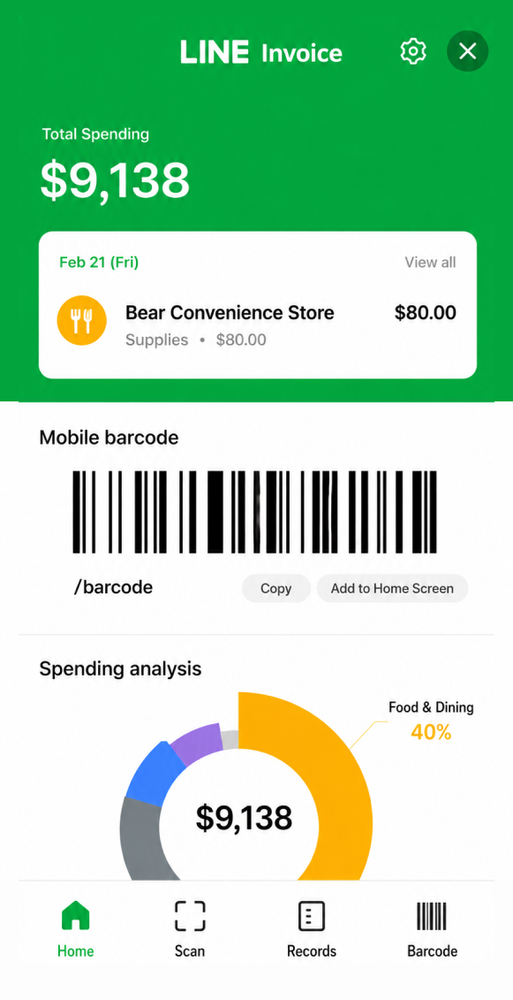
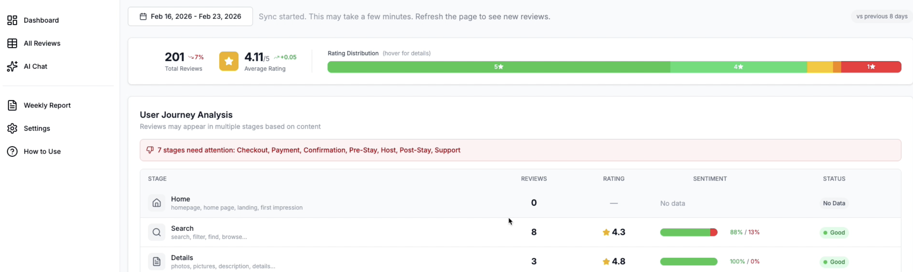
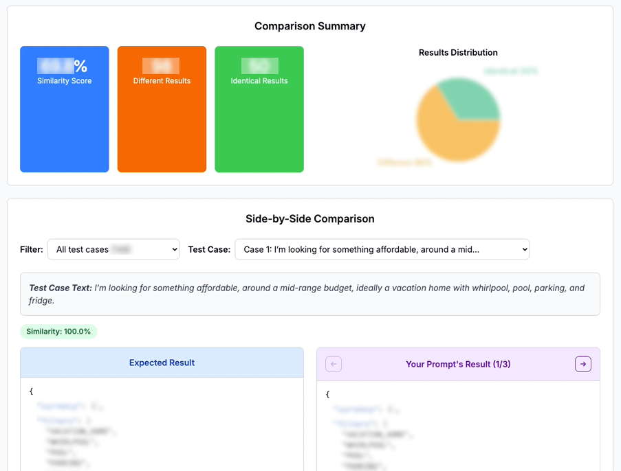
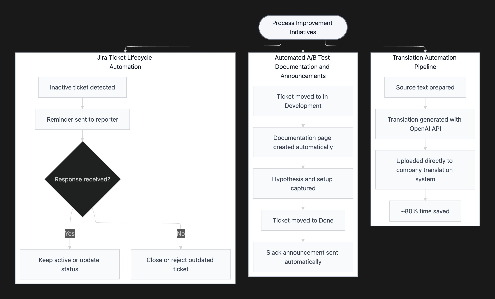
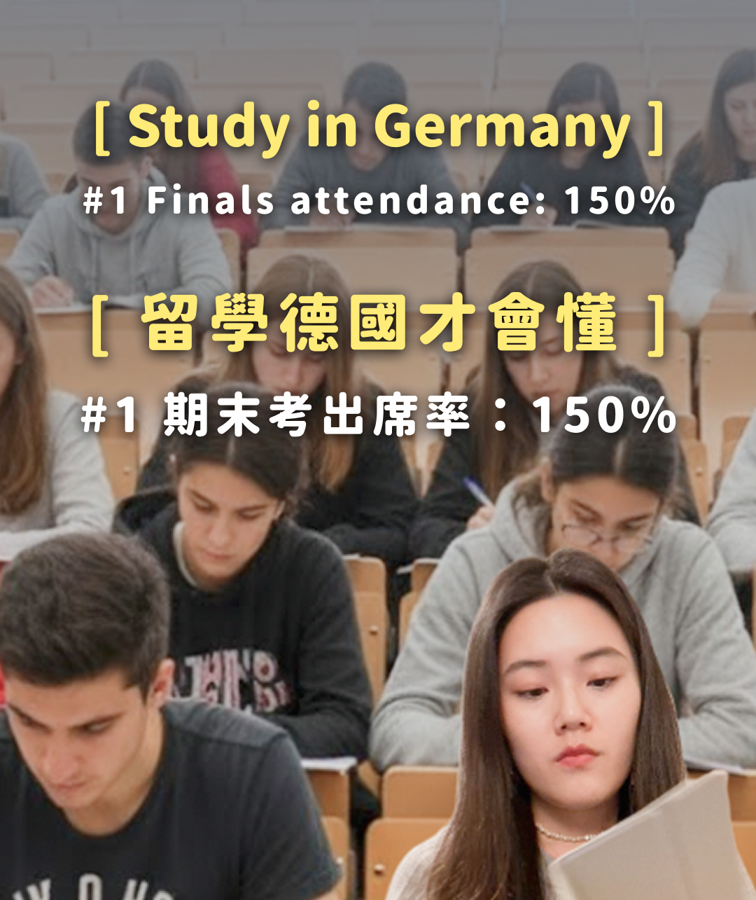

01
I listen before I build.
I use user interviews, journey mapping, and UX thinking to get underneath the request and find the real problem worth solving.
Hi, I’m Yutzu!
I’m a product manager who combines user research, data, and rapid prototyping to make complicated problems feel simple.
See how I work ↓What I bring to product
I use user interviews, journey mapping, and UX thinking to get underneath the request and find the real problem worth solving.
I connect product analytics, experiments, and customer behavior so teams can see what is working, what is getting in the way, and what to improve next.
I use Figma or AI tools to turn a rough thought into something people can react to sooner, then I keep the human judgment in the loop.
Selected work




How I got here
Drove experimentation and AI workflow projects across product teams at Holidu. Turned business goals and user needs into clearer product decisions, and turned messy operations into automations.
Led LINE Invoice from discovery to launch inside one of Taiwan’s most-used platforms. Combined market research, user interviews, and product strategy to turn a government-backed service into something people actually used.
Managed AI model improvement projects across multiple LINE products. Translated model performance issues into structured testing plans, accuracy gains, and better operational visibility.
Worked on partnership and growth initiatives for Kdan Mobile. Enhanced advertising performance by doing keyword research and campaign planning.
This degree deepened my thinking of management, digital innovations, and AI. My thesis focuses on systematically mapping AI agents with LLM-assisted extraction.
Built my foundation in business strategy and market thinking here. The program became the base layer for my later move into product management.
This exchange experience was my first deeper exposure to living and studying in Germany. It shaped how I think about working across cultures and systems, and influenced the international direction of my later career choices.
Beyond the PM
On Instagram, I share what I notice through product thinking, career growth, and life between Taiwan and Europe. I write about studying and working in Germany, building small systems for myself, navigating career changes, and the quiet thoughts that come up along the way.
I travel, observe, ask questions, and try to turn those notes into something useful for people who are also figuring things out. I share small reflections and practical ideas that can make someone feel a bit less alone, and a bit more clear about their next step.
@yutzu.journal

Move the pictures around
Let’s talk